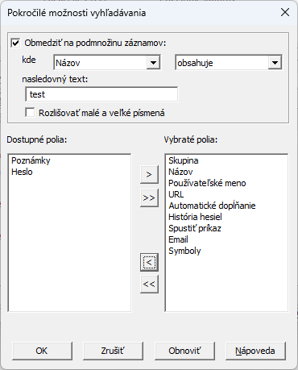

Password Safe vám umožňuje vyhľadávať záznamy s daným textom. Toto je užitočné ak si nepamätáte názov záznamu, ale máte dobrú predstavu o jej obsahu, napr. záznam s "Mária" v poznámkach.
Ak chcete vyhľadávať v databáze, stlačte Ctrl-F (alebo vyberte položku menu "Upraviť > Hľadať..."). Panel Vyhľadávania sa zobrazí nad stavovým riadkom v dolnej časti okna aplikácie, podobne ako na nasledujúcom obrázku:
Najjednoduchší spôsob ako to použiť, je zadať text, ktorý hľadáte a potom stlačiť Enter alebo kliknúť na ikonu lupy napravo od textového poľa. Počet zhodných záznamov (ak nejaké existujú) sa zobrazí na pravej strane panela a prvý zhodný záznam bude vybraný a zvýraznený. Opakovaným stláčaním klávesu Enter (alebo kliknutím na lupu) sa presuniete na ďalší zhodný záznam. Po prejdení všetkých záznamov sa Password Safe vráti späť na prvý vyhľadaný záznam.
Kláves F3 vykoná opakované vyhľadávanie a prejde na ďalší nájdený záznam, ktorý spĺňa kritériá. Podržaním Shift pri stlačení F3 sa vyhľadá predchádzajúci záznam v databáze, ktorý zodpovedá kritériám, a nie ďalší. Môžete tiež podržať kláves Shift pri kliknutí na ikonu lupy a nájsť predchádzajúcu zhodu.
 .
.